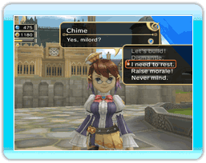

13 |
Sauvegarde de votre progression |
 |
Votre progression sera automatiquement sauvegardée à la fin de chaque journée, que Chime soit venue vous chercher ou que vous ayez décidé vous-même d'aller vous coucher.
Attention : les fichiers corrompus ne peuvent pas être récupérés.
|
 |
 |
 |